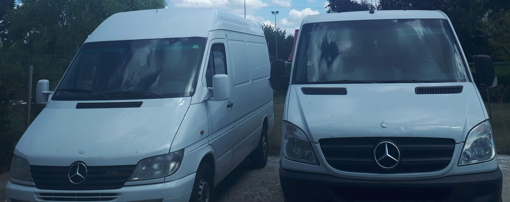
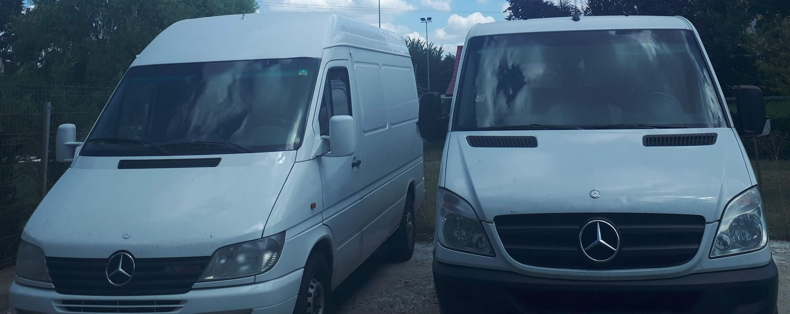
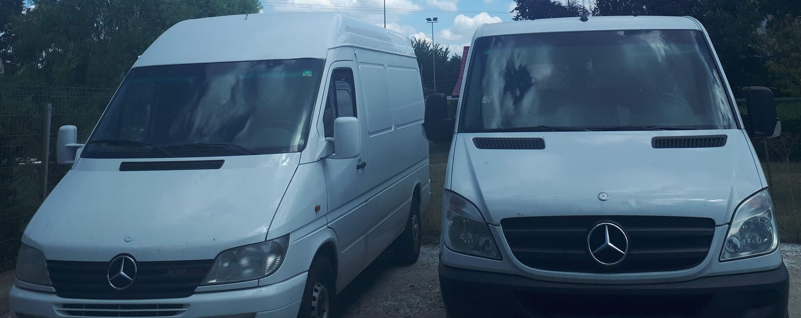

Flota Noastră
Mercedes Sprinter 2.2 CDI – 3.5T
- Spațiu de încărcare: 3.2m x 1.8m x 1.9m
- Consum redus, revizii la zi
- Ideal pentru transport marfă, mutări, mobila în Timișoara
 

Închirieri Microbuze Marfă – Dubă Autoutilitară • Transport Marfă • Mutări în Timișoara
Suntem un operator local din Timișoara, cu experiență în domeniul transportului, oferind spre închiriere microbuze de marfă. Fie că ai nevoie de un microbuz cargo pentru mutări sau pentru transport marfă, îți oferim servicii rapide și flexibile. Închiriază dubă în Timișoara simplu și eficient!
Mercedes Sprinter 2.2 CDI – 3.5T

Pentru rezervări și informații privind închirierea de microbuze marfă în Timișoara: